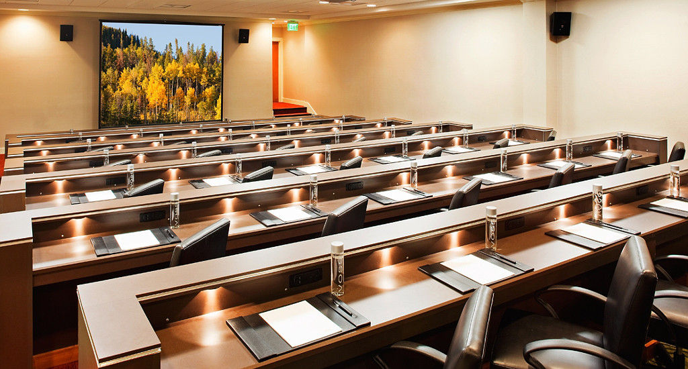
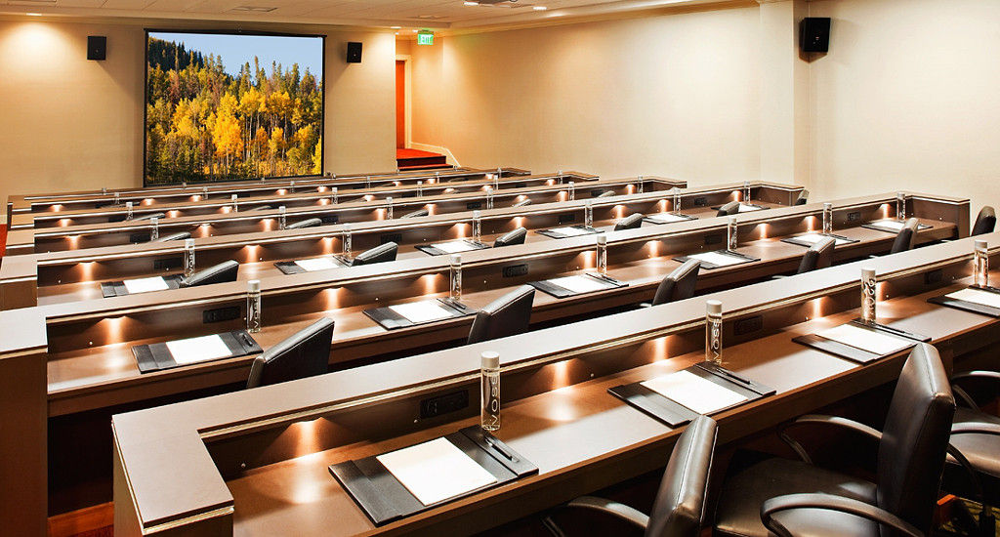

Keynote
Engineering Model-based Adaptive Software Systems
Marin Litoiu, PhD, Peng.
Associate Professor, York University
Biography
Marin Litoiu is with the Department of Electrical Engineering and Computer Science and the School of Information Technology at York University. He leads the Adaptive Software Research Lab and focuses on making large software systems more versatile, resilient, energy-efficient, self-protecting, and self-optimizing. His research won many awards including the IBM Canada CAS Research Project of the Year Award and the IBM CAS Faculty Fellow of the Year Award for his "impact on IBM people, processes and technology."
Prior to joining York University, Dr. Litoiu was a Research Staff member with the Centre for Advanced Studies in the IBM Toronto Lab where he led the research programs in software engineering and autonomic computing. He received the Canada NSERC Synergy Award for Innovation in recognition for these collaborative university/industry activities. He was also recipient of the IBM Outstanding Technical Contribution Award for his research vision on Cloud Computing.
Dr. Litoiu is a co-founder of the SEAMS Symposium series-ACM/IEEE Software Engineering for Adaptive and Self-Managing Systems and the Chair of the SEAMS Steering Committee. He was the General Chair of SEAMS in 2013 and currently serves on the steering committees of IEEE MESOCA and CASCON. Dr. Litoiu is also member of IEEE CS Conference Advisory Committee and Vice-chair of IEEE Technical Council on Software Engineering.
In addition, Dr. Litoiu is principal investigator and team lead on the NSERC Strategic Research Network for Smart Applications on Virtual Infrastructure (SAVI) and on the Ontario ORF-RE project Connected Vehicles and Smart Transportation (CVST). CVST is a partnership that addresses the design of future platforms for connected vehicles. It includes researchers from Ontario universities and companies bringing together expertise in transportation, cloud computing, big data, and business. The main research goal of the SAVI Network is to address the design of future platforms built on a malleable and evolvable infrastructure that can deploy and operate retire the large-scale, bursty, distributed applications.
Abstract
Adaptive software systems respond to changes in operating conditions by modifying their structure and behaviour. This property enables the software to be more resilient, versatile, self-protecting, self-healing, and self-optimizing. The common way to engineer adaptive software is to equip the software with monitoring, analysis, planning, and execution services interconnected by a feedback loop. A monitoring service will collect metrics from the running software and environment. An analysis service will analyze the collected metrics and decide if one or more corrective actions are needed to change the structure or behaviour. Planning and execution services will use the analysis results to devise and implement a change plan. In this talk, I will present research results that use performance runtime models to engineer adaptive software. A performance runtime model has a structure that is developed at software design time and parameters that are estimated at runtime, during the software operations. I will describe how we build such models and how we continuously tune the models at runtime using statistical estimators. A model is then used by an optimization engine to devise the change plans. The optimization can be as simple as a set of rules or prediction and multi-objective optimization in a Model Predictive Control approach. To illustrate the main points in designing, implementing, and validating adaptive software, I will describe several self-optimizing and self-protecting case studies for web applications deployed in public and cloud environments. Finally, I will talk about future directions and trends in engineering adaptive software systems.